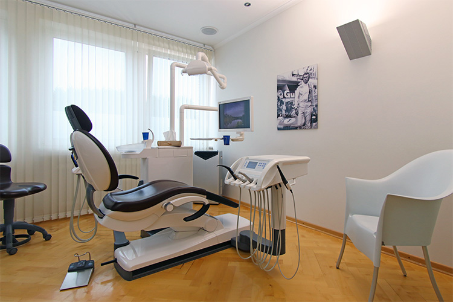
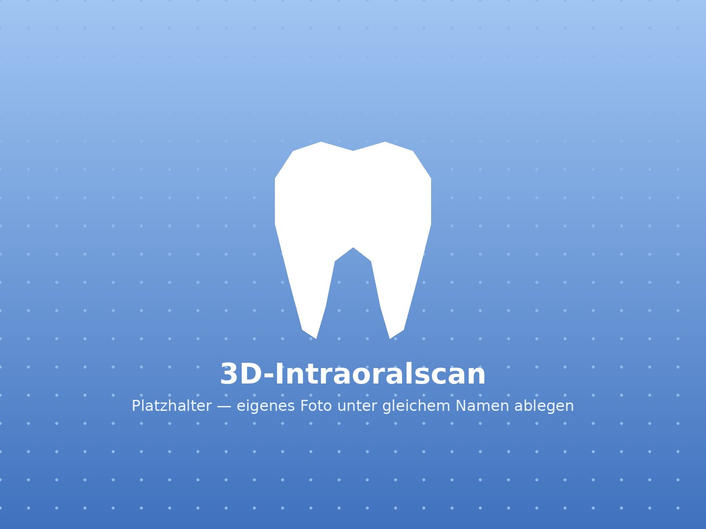
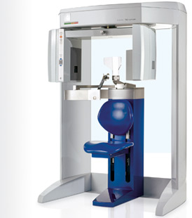
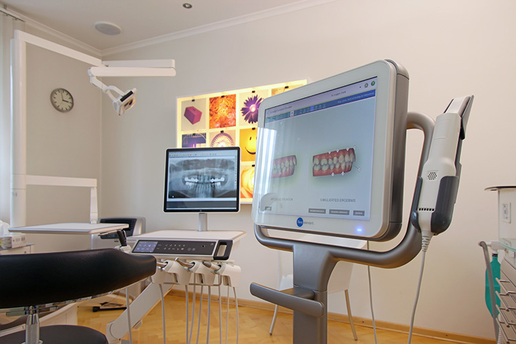
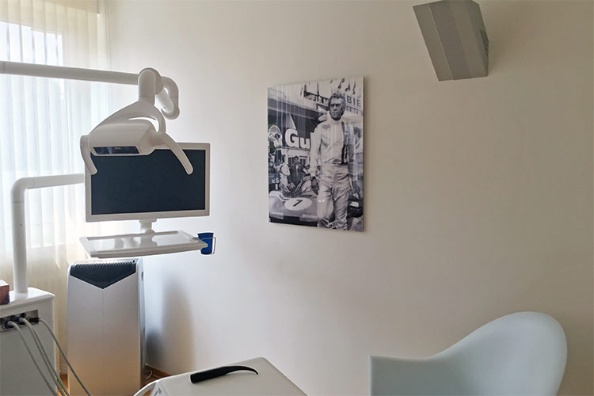
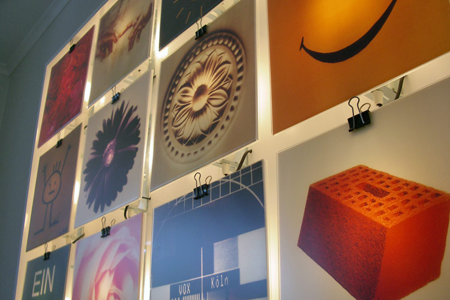

Behandlungsleistungen
Ihr strahlendes Lächeln
Schonende Therapien und moderne Technik — vom ersten Gespräch bis zur Nachsorge.

Abdruckfreie Praxis — 3D-Intraoralscan
Der herkömmliche Abdruck mit Abformmasse gehört bei uns der Vergangenheit an. Mit dem modernsten 3D-Intraoralscanner digitalisieren wir Ihre Zähne in wenigen Minuten — die präzise Basis für Zahnersatz (ZE) und Schienen.
- Kein Würgereiz, keine Abformmasse
- Für Zahnersatz und Schienen
- Höchste Passgenauigkeit durch digitale Modelle
- Direkte Übertragung ins Labor

Diagnostik & DVT
3D-Volumentomographie direkt vor Ort als Basis für präzise Implantatplanung und sichere Diagnosen.
- 3D-Röntgen in der Praxis
- Strahlungsarm und präzise
- Basis für die 3D-Navigation
3D-Navigation von Implantaten
Bundesweiter Pionier seit 2008 — minimal-invasive Schlüsselloch-Technik mit computergestützter DVT-Planung.
- Minimal-invasiv
- Individuelle Bohrschablone
- Kurze Heilungszeiten

Zahnersatz & Implantate
Individueller Zahnersatz nach präziser digitaler Planung — vollkeramisch, gefertigt in deutschem Meisterlabor.
- Vollkeramik höchster Güte
- Festsitzend & herausnehmbar
- Implantatlösungen für alle Situationen

Ästhetik & Funktion
Vollkeramik, Veneers und metallfreie Füllungen für ein natürliches Lächeln — funktionell und schön.
- Veneers & Keramikfüllungen
- Vollkeramische Kronen & Brücken
- Kiefergelenkstherapie
- Zahnfleisch-Mikrochirurgie

Prävention & Zahnerhaltung
Professionelle Zahnreinigung, individuelle Prophylaxe-Programme und unser Recall-System — für ein Leben lang gesunde Zähne.
- Professionelle Zahnreinigung (PZR)
- Recall-Erinnerungsdienst
- Individuelle Prophylaxe-Programme